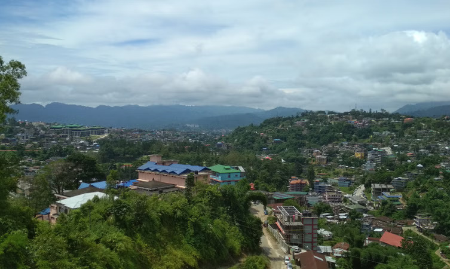

IMAGE GALLERY
Here are some images of the beautiful state.
Click on the images to make them bigger


Land of the Dawn-lit mountains
Arunachal Pradesh is India's remotest state and the first Indian soil to greet the rising sun. Located on the northeastern tip of India with its borders touching Tibet, Bhutan and Burma (Myanmar), this beautiful land is endowed with dazzling array of flora and fauna that is sure to allure any tourist. More than 500 rare species of Orchids are found in the dense jungles of Arunachal Pradesh. The misty hills, sparkling rivers, gurgling waterfalls add charm to the beauty of this incredible land. Ruled by many powerful dynasties and kingdoms, Arunachal Pradesh India is dotted with innumerable historical monuments and archeological remains, which bear testimony to its rich cultural heritage.
There are a lot of places in Arunachal Pradesh which you can visit, so here I have narrowed it down to some of the best 5 places to visit. From valleys to national parks, and passes, or serenic towns, there will be no time for you to be bored in this beautiful state.
Tawang is a high altitude town located in the lap of the mighty Himalayas which offers a perfect blend of nature and culture.
Since the town boasts an elevation of 10,000 feet, it is a paradise for any mountain lover looking for high altitude places to visit Arunachal Pradesh.
The picturesque town is replete with numerous tourist attractions like vibrant Buddhist monasteries, high altitude passes, war memorial and scenic lakes which make it an enticing holiday destination.
Among the most important tourist attractions, Tawang proudly cradles are the largest monastery in India and Tawang War Memorial built to commemorate the martyrdom of soldiers who laid down their lives in Sino-Indian war.
Location: North-Western part of Arunachal Pradesh
Best Time to Visit: March to June and September to October
Ziro Valley is a picturesque valley tucked away in the Himalayan foothills.
Surrounded by the pine ridden mountains, paddy rice fields, quaint hamlets, bamboo huts and vibrant range of flora and fauna, Ziro Valley is a paradise for nature lovers, adventure seekers as well as cultural vultures.
Being a World Heritage Site, this valley gives you a chance to explore the culture and tradition of the tribe Apatani which is an exclusive experience that you will cherish for the rest of your life.
A visit to this tranquil place will definitely soothe your soul and mind.
Location: Lower Subansiri district
Best Time to Visit: October to March
Away from the chaos of the city, Bomdila is a remote quaint town which gives you a glimpse of the unique culture and tradition.
Enjoy the natural splendour of this town set amidst the snow-laden hills and vibrant landscape, lush green valley and apple orchards.
Some of the places to visit here are Bomdila Monastery, Sissa Orchid Sanctuary, Gompas, Eaglenest Wildlife Sanctuary, Bomdila View Point and much more.
Bomdila gives you an opportunity to explore the wildlife, culture and tradition and the beauty of nature at a single place.
Location: West Kameng
Best Time to Visit: April to October
Another treat for wildlife enthusiasts in Arunachal Pradesh, Namdapha National Park is the largest protected area and the third largest national park in India.
The park is spread across an area of 1985 sq. km and features an elevation range of 200 metres to 4571 metres.
The towering mountains, dense jungles, and many water bodies in the national park harbour an extensive range of wildlife species including snow leopard, red panda, and clouded leopard, and the park is thus considered to be one of the most excellent areas in terms of biodiversity.
The activities that can be enjoyed at Namdapha are wildlife and landscape photography, boat ride, jungle camping, jungle safari, and much more.
Location: Changlang district
Best time to visit: October to April
Entry fee: INR 50 per person
Timings: 8:00 AM to 5:00 PM
Sela Pass is a mountain pass which enjoys an elevation of 13,700 feet. Snow covers this pass all year round and it remains open for the tourists during all seasons.
This pass is considered sacred by Buddhists, and it is believed that there are 101 lakes around it.
The fame of the pass is also attributed to the divine high altitude Sela Lake or often known as the Paradise Lake that adds grace to the picturesqueness of the place.
Sela Lake freezes during the winter which makes this lake dreamlike.
Location: Between Tawang and West Kameng
Best Time to Visit: March to April and October-November
Arunachal is jam packed with things to do during your stay. The hardest part of planning your holiday will be to decide which ones to do first! Therefore, I have sorted some things out so you can pick with ease.
A major part of Arunachal Pradesh is covered with lush evergreen forests. Foreign tourists, particularly adventure seekers are regular visitors who come here to explore the numerous trekking routes located in the mountains. For trekkers, the Bomdila-Tawang area offers enormous scope. The area around Tawang Chu is both interesting and challenging for trekkers. Starting from Jung, one can trek to Mago passing through a breathtaking jungle where one can see some superb waterfalls. The best months for trekking are May and October. For boating, tourists usually head for the Salley Lake where boating facilities are provided to visitors.
Those who have a penchant for river sports make it a point to indulge in rafting on the Siang River which is so thrilling. Geographical explorers of the past used to address this river as the 'Missing link' while trying to unravel the link between the Brahmaputra of Assam and Tibet's Tsangpo River. As per Tibetan belief, the Siang River is considered as 'horse mouth river' and its sands are actually emeralds that flows towards east. They also believe that one can become as strong as a horse by drinking its water.
Here are some images of the beautiful state.
Click on the images to make them bigger